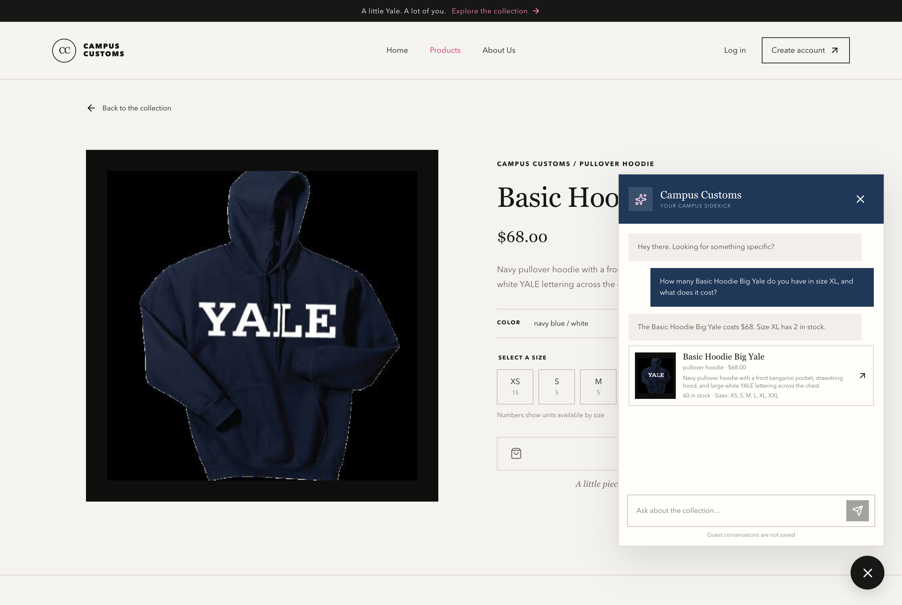
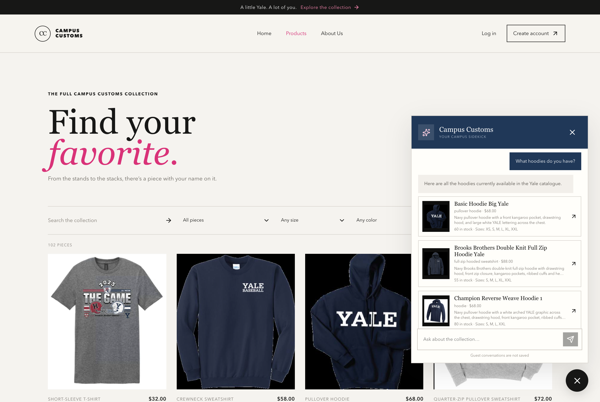
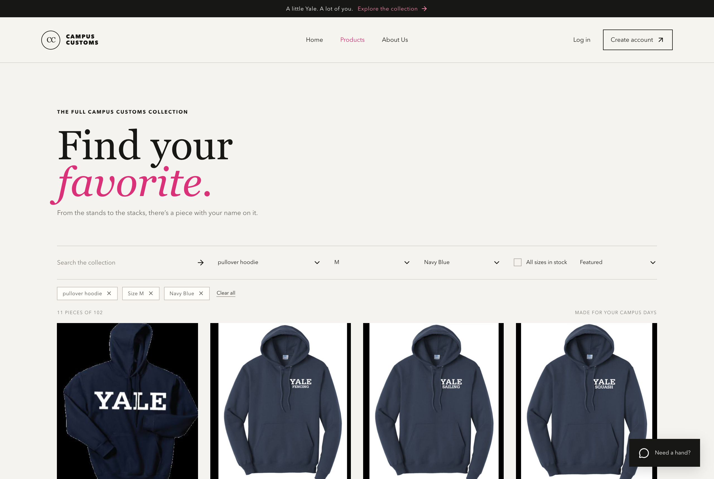

Three checks captured from the live running site (Vite frontend on :5173, FastAPI backend on :8000). All screenshots are fresh captures of the final application. All chat was done as a guest, so no test data was written to the database.

A shopper asks the live chat widget “How many Basic Hoodie Big Yale do you have in size XL, and what does it cost?” and the assistant answers “The Basic Hoodie Big Yale costs $68. Size XL has 2 in stock.”
Verified against the database. campus_customs.db records this product at
price = 68.0 with quantity = 2 for size XL — so the chatbot retrieved
real inventory rather than inventing a number. The product page behind the widget independently shows the same
$68.00 price and its per-size stock counts.

The category question “What hoodies do you have?” causes 27 product cards to render dynamically inside the page — each with its real photo, name, garment type, price, total stock, and available sizes.
Verified against the database. The catalogue contains exactly 27 hoodie-category products, and the
returned items match real rows: basic-hoodie-big-yale at $68.00,
brooks-brothers-double-knit-full-zip-hoodie-yale at $88.00, and
champion-reverse-weave-hoodie-1 at $68.00. Clicking the first dynamic card was also tested and it opened
its existing single-product page at /products/basic-hoodie-big-yale.

The Problem 9 catalogue filters are demonstrated on the live Products page: selecting pullover hoodie + size M + Navy Blue narrows the catalogue from 102 pieces to 11, with a removable chip for each active filter and a “Clear all” control.
Why this proves it works. The counter reads “11 PIECES OF 102”, the three dropdowns show the active
selections, and every visible card is a navy pullover hoodie. Querying the database for pullover hoodies that are navy
blue and have size M in stock also returns 11 products. The filters are written to the URL
(?type=pullover+hoodie&size=M&color=navy+blue), so the filtered view survives a reload and can be shared.